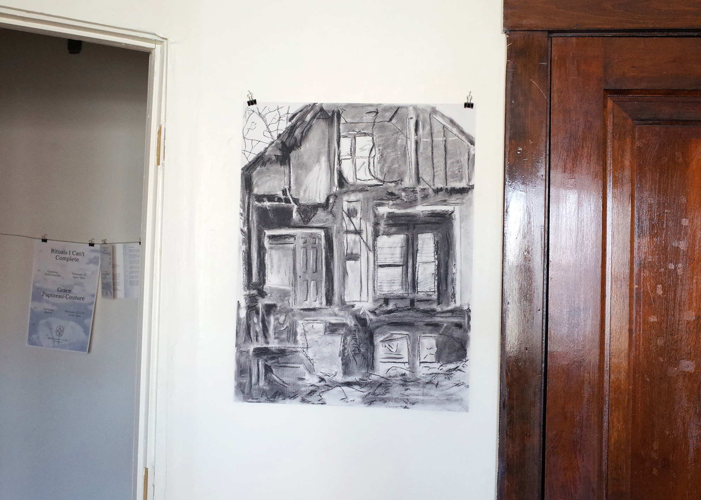

Rituals I Can't Complete
Poster and exhibition pamphlet for Rituals I Can't Complete by Canadian born artist Grace Papineau-Couture at Gallery 4009. Gallery 4009 was a short-lived apartment gallery co-run by Carter Teranes and Emily Swenson as a way to explore the role of graphic design in the curation and presentation of art, specifically within a domestic setting. As designers acting as curators, each of the two exhibitions run made use of supplemental graphic materials in dialogue with the artist’s body of work.
Design
Emily Swenson
Direction
Carter Teranes
Typefaces
Toren Proportional
B2 Hana
Times New Roman
Caudex
Riso Colors
Federal Blue
Black
Year
2024